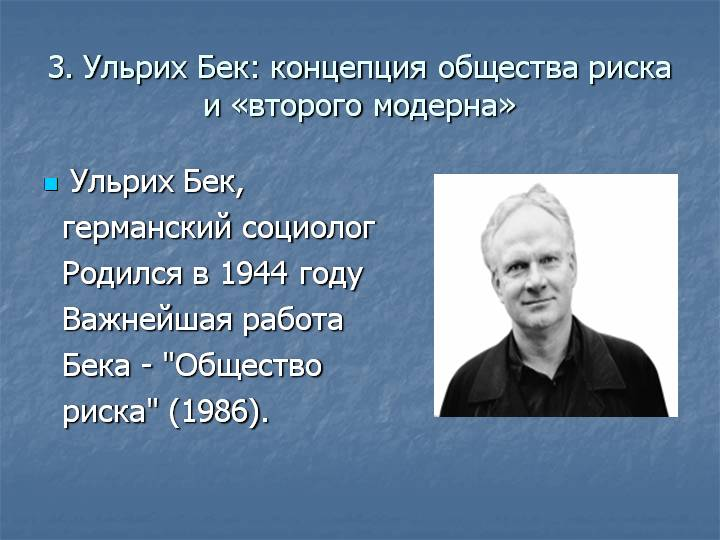

Intersubjectivity¶
39. Consciousness¶
KEY QUESTIONS
How can consciousness talk about consciousness? How can a brain describe a brain?
How could the presence of a mind-independent reality be proved?
Is our mind in our head? Where else might it be?
WHY DOES THIS MATTER?
The founder of phenomenology, Edmund Husserl, realised that in order to study consciousness it was impossible to escape the problem that whatever an individual consciousness was (and the very idea of individual is problematic) the consciousness of one mind was relative to another.
Husserl considered the idea of consciousness between people, or what he called intersubjectivity. He argued that consciousness emerged between minds in a shared environment, or ‘lifeworld’.
Husserl was primarily focused on the structure of consciousness and his idea of intersubjectivity was framed around the face-to-face interaction between two people. Broader relations to society, contemporaries and ancestors were not considered.
However, consciousness is between people face-to-face, and between people who are not with us immediately, with material objects in the world (like computers), and maybe even between the minds of the living and the minds of dead (how could we know?)
Often neuroscience identifies the mind inside the head: in doing so, it presupposes an objective world of ‘mind’ beyond the mind that makes the observation through MRI scanners!
40. Consciousness and Intersubjectivity¶
KEY QUESTIONS
Is consciousness in between people analyzable?
How conscious are you now?
What are the observable features of consciousness?
WHY DOES THIS MATTER?
Alfred Schutz made a connection between Husserl’s intersubjectivity and Weber’s sociology. Weber, in defining sociology as “a science concerning itself with the interpretive understanding of social action and thereby with a causal explanation of its course and consequences” [@weber_economy_1978] lacked a theory of human understanding, and didn’t go into much detail about the ways in which human communication occurs.
Schutz saw Husserl’s attempt to describe intersubjectivity as a corrective to this: a comprehensive theory of mind that could be united with a theory of social life. However, Schutz felt that Husserl’s account of intersubjectivity was deficient since Husserl’s main focus in considering intersubjectivity is one-to-one close relations, and ignores the broader dimension of what Schutz called the “world of others”.
world of others, according to Schutz, involves a range of different kinds of intersubjective relations, from intimate face-to-face relations, to distance relations with ‘contemporaries’.
The online world presents a clear distinction between face-to-face engagement and more distant relations. Schutz himself distinguished between between face-to-face engagement, or what he called a “pure we-relation”, and engagement at a distance. He identified what he called a ‘spectrum of vividness’, arguing that the difference between the face-to-face world and what he calls the “world of contemporaries” can be illustrated by the experience of ending a face-to-face encounter:
41. Communication and Expectation¶
KEY QUESTIONS
Can you communicate with someone if you have no idea of what they think?
When you email somebody, who are you talking to?
WHY DOES THIS MATTER?
The sociologist Talcott Parsons sought to develop Schutz’s ideas about expectation into a more systematic theory of human communication, arguing that what happens in communication was a process of what he calls ‘double contingency’[@parsons_social_2012]. \(A\)’s expectations of \(B\)’s behaviour in response to \(A\)’s utterances are mirrored by \(B\)’s expectations of \(A\) behaviour to \(B\)’s utterances. In an extended correspondence between them, Parsons and Schutz wrestle between a systematic and systems-theoretical characterisation of communication (which was what Parsons sought) and a phenomenological and more subtle characterisation of the development of consciousness in communication (which Schutz was aiming for) [@grathoff_theory_1978].
What Schutz refers to as a “decreasing number of perceptions” suggests that each of the sensory ‘channels’ which carry alternative descriptions of the encounter are degraded with distance. What is constructed from these multiple descriptions is, Schutz suggests (in line with Husserl), a set of expectations about the communication situation without which the making of utterances would be impossible. In other words, I can only write these words now because I have some expectation of the experience of you as a reader.
The meaning of my words is therefore dependent on the coordination of expectations between people who communicate: Husserl called these sets of expectations ‘horizons of meaning’, and so it can be said that what is communicated are not words but expectations or meanings.
Schutz does not suggest that the process of ‘coordinating expectations’ does not happen at a distance, but he does suggest that the mechanisms by which meanings are established and coordinated between people are different in the situation where there is face-to-face contact, and where there is no physical co-presence.
Schutz’s analysis presents some fascinating questions: might he say that a ‘pure we-relation’ is still possible at a distance using a medium of communication (say Skype) which does not decrease the number of perceptions?
{width=”columnwidth”}
42. Dialogue and Listening¶
KEY QUESTIONS
What happens when we listen somebody carefully?
After listening, how do we formulate a response?
Can we teach people to listen better?
WHY DOES THIS MATTER?
Dialogue involves listening to a greater extent than it does talking
In dialogue there is not necessarily a free choice of talking: what is said is said in the context of what is understood by what is heard by others.
Dialogue articulates a structure which has many levels: a conversations about an object produces a conversation about the conversation about the object, or a conversation about the conversation about the conversation about an object. These different levels of discourse shift over time. What emerges are different discrete strata of construction.
David Bohm believed that at its best, dialogue reflected deeper structures in the universe. The multiple strata of patterns of engagement in dialogue help us to perceive something deeper.
Objects can help with the process of dialogue. When an object is presented (for example a photograph), it invites many different descriptions from different people. When these descriptions are brought together, it produces a richer picture not just of the object, but of the different people who makes descriptions about it.
Teachers are particularly skilled in generating multiple descriptions of the same thing. The process of teaching is a process of generating redundancy: the teacher may say “think about it like this”, or “here’s an example”, or “let me tell you a story about this”, or “What do you think?” (which is an invitation to multiple descriptions produced by others.
Encouraging people to listen requires encouraging people to see the importance of multiple descriptions of things rather than being focused on a single ‘correct’ description. Science is partly to blame for presenting the world in a single description. Modern physics actually tells us that this isn’t how things are.
43. Unhappiness¶
KEY QUESTIONS
How do childhood relationships with parents affect us in adult life?
What is the relation between ourselves and our environment which makes us unhappy?
What are the factors which help alleviate unhappiness?
WHY DOES THIS MATTER?
Unhappiness may have a systemic explanation. In the study of animal behaviour, it became clear that the relationship between mothers and babies was a systemic relation. If mothers were separated from babies, then the result was distress.
Konrad Lorenz, who was the pioneer of this work, projected his findings on to the human world:
The competition between human beings destroys with cold and diabolic brutality… Under the pressure of this competitive fury we have not only forgotten what is useful to humanity as a whole, but even that which is good and advantageous to the individual. […] One asks, which is more damaging to modern humanity: the thirst for money or consuming haste… in either case, fear plays a very important role: the fear of being overtaken by one’s competitors, the fear of becoming poor, the fear of making wrong decisions or the fear of not being up to snuff… [@lorenz_aggression_2002]
In Lorenz’s work with geese, he noticed how the movement of chicks maintained proximity to the mother. He called this mechanism of maintaining proximity ‘imprinting’ and explored its parameters by replacing real mothers with a wire-frame model which was presented to the chicks within hours of hatching: as a consequence, the baby chicks maintained proximity to this object as if it was the mother. It was a cybernetic experiment where theoretical models and empirical evidence combined convincingly.
Does this suggest that emotions such as unhappiness, grief, anger have their roots in the systemic relation between the child and the parent? More broadly, it may suggest that the relationship between the organism and the environment is the critical determiner of emotion.
If this is the case, then it suggests that issues of experience of emotion have a connection to political issues in the social environment: what R.D. Laing calls the ‘Politics of Experience’ [@laing_politics_1990]
44. Attachment: The roots of emotion in childhood¶
KEY QUESTIONS
What is the child’s tie to its mother as a systemic relation?
Why does disruption to the child’s relationship with its mother lead to psychological trauma later in life?
Can deep emotional issues be understood in terms of abstract systems?
WHY DOES THIS MATTER?
John Bowlby stated that ” the child’s tie to his mother is a product of the activity of a number of behavioural systems that have proximity to mother as a predictable outcome.”
He suggested that “young children, who for whatever reason are deprived of the continuous care and attention of a mother or a substitute-mother, are not only temporarily disturbed by such deprivation, but may in some cases suffer long-term effects which persist” [@bowlby_effects_1956]
Bowlby called his mechanism ‘attachment’ and expressed it in cybernetic terms: “What principles of organisation are necessary if behaviour is to attain these ends?”. In stating his organisational principle, Bowlby sets the stage for an analysis of personality arising from mechanisms of early life relations and the organisational dynamics of development. He focused particularly on the relationship between the child and the mother - although the issue is really about the principal caregiver of whichever sex.
The demonstration of the thesis demanded attention on what happened if the proximity to the mother is not a predictable outcome. What happened where the mother or father rejected the child’s affection, or attachments were affected by death or drastic changes in circumstance? In exploring this, Bowlby turns to some of the fundamental problems of psychoanalysis.
The consequence of this view was that human behaviour had to be studied relationally. Humans were not individuals, but inter-connected systems: recent research work of addiction supports his findings. [@flores_addiction_2011].
45. Facilitating Learning¶
KEY QUESTIONS
How do you become a facilitator of discussion rather than a possessor of knowledge?
What is Personal Intellectual Transformation?
WHY DOES THIS MATTER?
During the communicative process, complex theoretical problems are put forward and solved, scientific material is analyzed, the positions of various scientific schools are compared, disputable points are identified and clarified.
The communication between students and the teacher makes it possible to build scientific information in a single harmonious system, to highlight the main points in it, to reveal the position in the proof analysis, and to help students to critically comprehend the proposed factual material, to realize and evaluate it, highlighting the most necessary and discarding the secondary.
The content of communication is information that the teacher offers students through various communication tools. However, the essence of communication is not limited to information exchange. To ensure that the content of the discipline has been assimilated by students at a high level, it is necessary, along with pedagogical tasks, to set and solve communicative tasks.
In teaching, we choose the most effective methods of communication and on their basis to organize productive communication between the teacher and the student.
Successful communication is facilitated by the use of information products and pedagogical technologies aimed at activating students’ thinking. Typically, experienced teachers intuitively use in their work a synthesis of elements of creative learning.
To encourage students to think, documenting experiences and reflections helps to expand the field of inquiry through the consistent formulation of the set of questions “Why?” (Similar to curiosity in childhood), and helps to identify cause and effect relationships, helping to better understand the subject of research and plunge into the research problem.
46. Risk and Anxiety¶
KEY QUESTIONS
What are you worried about?
Do we worry about more things than our parents did?
Do technological advances create more things to worry about?
Is anxiety evenly distributed in society?
WHY DOES THIS MATTER?
German Sociologist Ulrich Beck argued that we now live in a ‘risk society’, where risks are manufactured both in the creation of new technologies, and in the creation of new risks in the law, the economy, and education.
Beck argues that the distribution of risks is not even: those at the bottom of society are subject to far more risks, with far fewer means of addressing them, than those at the top.
He argues that there is a connection between risk and education: that new technologies create new requirements to learn to use new tools, which increases the risk of not being qualified.
Furthermore, Beck argues that education itself becomes a risk:
“Everywhere educational reform is accompanied by a dependence on education. More and more groups get caught up in the race for educational credentials. As a result there emerge new internal differentiations. Whilst these may still respond to traditional differences between groups, the impact of education makes them fundamentally different from traditional ones. […] In conjunction with novel patterns of upward and downward mobility and increasing local labour mobility as well, new hierarchies and differentiations develop which are internal to social classes. They presuppose the expansion of the service sector and the creation of new occupations.”[@beck_risk_1992]

47. Constructs¶
KEY QUESTIONS
Are the words you use to describe the world the same as the words others use to describe the world?
Do you mean the same things by the words you use as others do when they use the same words?
Do the words we use to describe the world reveal how the world is, or how we are?
WHY DOES THIS MATTER?
We use words to describe our reality, and reality appears differently to each of us.
Whilst this doesn’t mean that reality is simply language, it does emphasise that the words we use form an important part of the fabric of the world through which we have to find our way.
Finding our way in the world is not something we do alone: we have to communicate with other people. That means that we have to coordinate our understandings of the words we use with the understandings of words by others.
George Kelly’s ‘Personal Construct Theory’ is an approach to analysing the different ways individuals construct their reality by analysing the different words they use in different circumstances.
For example, if I was to classify ‘cakes’, I might think of a variety of ways of describing and categorising them, including “sweet”, “fluffy”, “heavy”, “fruity”, and so on.
The way I use those words may differ from the way other people might use them: so, given a set of cakes, how I categorise them may be different to how others categorise them.
The value of doing Personal Construct analysis is it opens up a broader conversation about where distinctions really lie, and how different people with different distinctions can coordinate themselves.